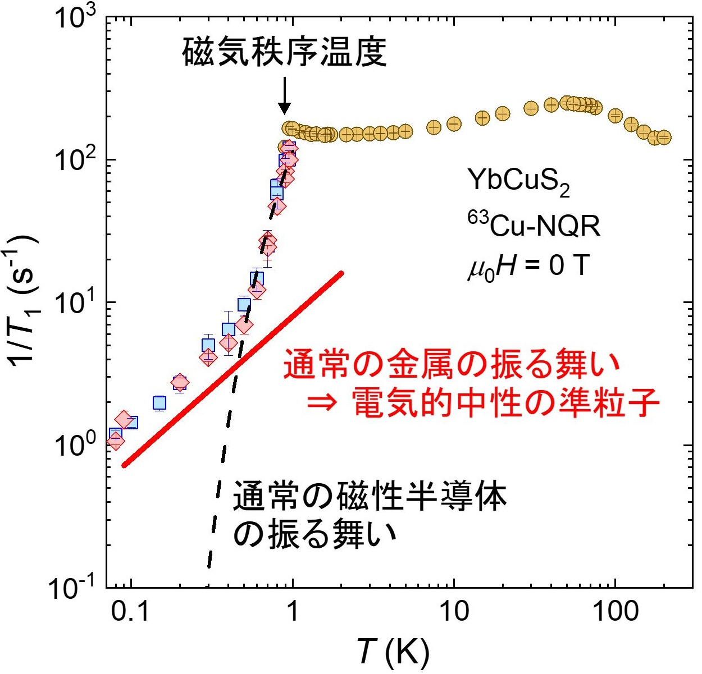
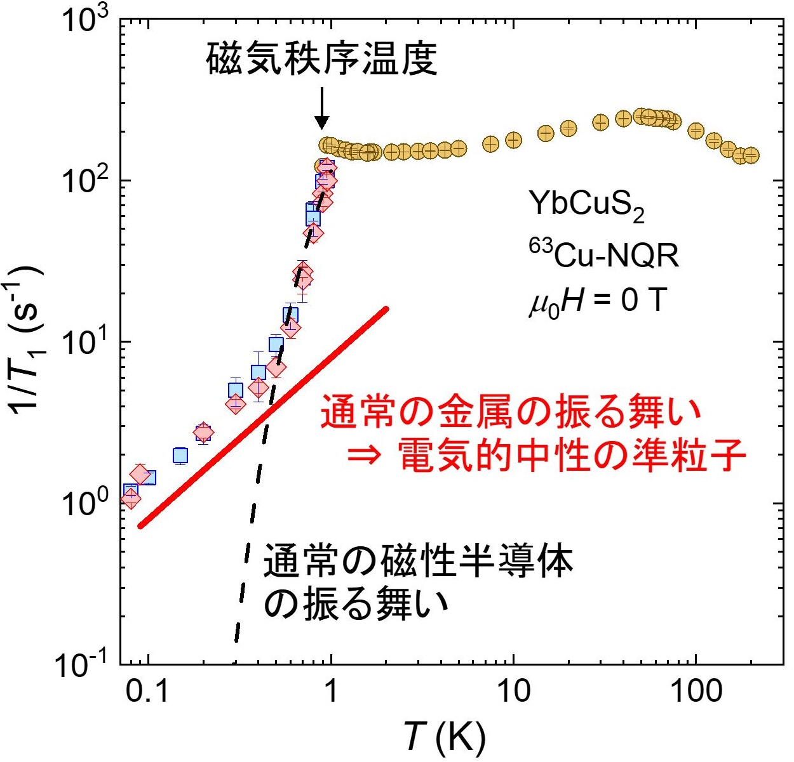

Research
磁性
モーターやスピーカー、ハードディスクなどの我々の身の回りの至る所で使用されている永久磁石は、現代社会を支える必要不可欠な機能性材料の1つです。一見、単純に見える磁石の性質（磁性）ですが、その起源は電子がもつスピンという量子力学的自由度*にあります。スピンは「小さな磁石」として振る舞うため、物質中でスピンの向きが自発的に揃うと「強磁性体」と呼ばれる状態になり、これが永久磁石の正体です。その他にも、スピンがばらばらに向いた「常磁性体」や、隣り合うスピンが反対方向を向く「反強磁性体」など、世の中にはさまざまな磁性をもつ物質（磁性体）が存在しています。我々は、そうした磁性体の背後にある物理法則を研究しています。* 古典電磁気学のマックスウェル方程式によれば、磁場$H$は、電流$j$や時間変化する電場$D$によって生じます（$\nabla \times H = j + \partial D/\partial t$）。つまり、磁場の起源は基本的に「動く電荷」です。しかし永久磁石は、外から電流を流しているわけでもなく、電場を時間変化させているわけでもないのに、強い磁場を持っています。さらに、ボーア・ファン・リューエンの定理によれば、古典統計力学（古典力学・古典電磁気学に基づく統計力学）の枠組みで、物質は熱平衡状態で自発的な磁化を持つ（磁石として振る舞う）ことができません。すなわち、古典物理学だけでは永久磁石そのものが存在できないのです。永久磁石の性質を理解するには、「量子力学」が必要なのです。
磁気フラストレーション
「フラストレーション」って言葉は、欲求が何らかの障害によって阻止され、満足されない状態のことを意味します。コロナ禍の緊急事態宣言では、満足てきていた人もいれば、フラストレーションが溜まっていた人もいると思います。みんなが満足できる対策ってなかなか難しいですよね...。 それと同じように、物質中の電子スピンも、みんなが同時に満足できないような（フラストレートした）状態が生じる場合があります。ここでいう「満足できない」、というのは「相互作用のエネルギーを最も得する配置を選べることができない」という意味です。図のようにスピン間に反強磁性的な（隣り合うスピンが反対方向を向く）交換相互作用がはたらく2つのイジングモデル(a), (b)を考えます。(a)のようにスピンが四角形の格子点に位置してる場合、全ての隣り合うスピンが反平行($\uparrow$,$\downarrow$)に揃った構造をとることができます。一方で、(b)のようにスピンが三角形の格子点に位置してる場合は、2つのスピンを反平行に置くと残りのスピンはどの方向を向いてもエネルギーが変わらないので、安定な配置が決まりません。このように、幾何学的配置や相互作用の競合によって、すべての相互作用エネルギーを最低にすることができない状況を物理学では「フラストレーション」といいます。フラストレーションをもつ量子スピン系（フラストレート系）の例としてとしては、(c)三角格子、(d)カゴメ格子、(e)パイロクロア格子、(f)ハニカム格子、(g)シャストリーサザランド格子、(h)一次元ジグザグ鎖などです。フラストレート系では磁気秩序（周期的なスピンの配列）が抑制されて、通常の磁性体で実現しないような基底状態（量子スピン液体相、Valence-Bond-Solid相、Spin-Nematic相など）や準粒子 *（スピノン、磁気モノポール、マヨラナ粒子、エニオン、トリプロンなど）を示す場合があるので、現在もなお実験理論問わず盛んに研究が行われています。
* 準粒子: 素粒子ではないが、物質中で現象や振る舞いを表現するために導入される仮想的な粒子。物質が示す最もエネルギーが低い状態（基底状態）から少しエネルギーを与えた状態（励起状態）は、ほとんど相互作用のない準粒子が付け加えられた状態としてみなすことができる。
多極子
多極子（単極子、双極子、四極子、八極子…）は、もともと古典電磁気学において、空間中の電荷分布や磁荷分布の異方性を表すために導入された概念です。しかしこの考え方は、電子のようなミクロなスケールからなる量子力学の世界に対しても適用することができます。 近年では、異なる対称性を持った物理量の間に応答が生じる「交差相関応答」が注目を集めています。例えば、図に示した(a)ピエゾ電気効果、(b)電気磁気効果、(c)電流誘起歪み効果、(d)ピエゾ磁気効果などがその代表例です。これらの交差相関応答について、結晶中の電子状態を多極子によって特徴づけることで、対称性の観点から統一的かつ普遍的に理解する研究が進んでいます。一般的に多極子は、時間反転対称性（時間$t$を$-t$に変換したときの性質）と空間反転（パリティ）対称性（空間座標$(x, y, z)$を$(-x, -y, -z)$に変換したときの性質）に応じて、電気多極子、磁気多極子、磁気トロイダル多極子、電気トロイダル多極子の4つに分類されます。我々は、磁気四極子などの奇パリティ磁気多極子系で現れる(c)電流誘起歪み、磁気八極子や磁気トロイダル四極子などの偶パリティ磁気多極子系で現れる(d)ピエゾ磁気効果に興味をもって研究を進めています。

重い電子系
セリウム（Ce）、プラセオジウム（Pr）、イッテルビウム（Yb）のような希土類元素（ランタノイド）や、ウラン（U）のようなアクチノイドを含む金属間化合物では、電子の有効質量が自由電子の数百倍以上にもなることがあります。そのような特異な物質群は「重い電子系」とよばれます。重い電子が形成される主要なメカニズムとして、局在したf電子と伝導電子が低温で量子力学的に強く混成し、局在f電子のスピンが遮蔽される近藤効果が重要だと考えられています。重い電子系では、スピンを揃えようとする磁気秩序と、スピンを遮蔽しようとする近藤効果が競合します。この競合は、圧力・磁場・化学置換といったチューニングパラメーターを変えることで制御できます。これらのパラメーターにより磁気転移温度を連続的に抑制し、絶対零度で消失する点を「量子臨界点」と呼びます。量子臨界点近傍では熱ゆらぎによって支配される通常の相転移と異なり、量子力学的相互作用の拮抗による量子ゆらぎが支配的となり、物理量に非自明な温度依存性・パラメーター依存性（非フェルミ液体的挙動）が現れます。さらに、量子臨界点近傍ではしばしば電気抵抗がゼロになる超伝導が現れます。この超伝導は電子間引力に磁気ゆらぎが関与する非従来型超伝導である可能性が高く、現在も重要な研究テーマとなっています。
核磁気共鳴（Nuclear Magnetic Resonance）
原子核にはスピン（磁気モーメント）を持つものがあります。こうした原子核は、外部磁場の下でゼーマン効果を示します。 すなわち、核スピンの準位が分裂して核磁気モーメントが偏極し、磁場の方向に「磁石」が整列します。 そこへ準位間隔に等しいエネルギーを持つ振動磁場（高周波）を与えると、準位間遷移が引き起こされます。これを「核磁気共鳴（Nuclear Magnetic Resonance, NMR）」と言います。固体物性を担う主役は電子ですが、NMRは原子核をプローブとして利用し、その電子状態を微視的な観点から調べることができます。NMRは、・原子核サイトごとに局所情報を分離して取得できる。
・不純物相によらず目的物質のみを観測できる。
・弱い高周波磁場による共鳴を利用した分光法なので、測定系（電子系）にほとんど状態の変化を起こさず測定できる。
・電子系の静的情報（磁気構造）と動的情報（磁気ゆらぎ、素励起）の両方を取得できる。
・実験装置は比較的小規模であり、高周波技術が古くから確立している。
という利点があります。 我々はこのNMRを用いて、強相関電子系の微視的メカニズムを明らかにする研究を進めています。 弊研非公式VTuber固体電子ちゃんのお兄ちゃんである固体物性くんの解説動画は結構わかりやすいです。

準結晶
固体はこれまで、結晶（周期的な構造を持つ）とアモルファス（ランダムな構造を持つ）に分類されてきました。しかし1984年にD. Shechtmanらによって発見された「準結晶」は、これらとは異なる「第3の固体」として世界中で注目を集めています。準結晶は、図のように並び方に一定の規則性があるものの、周期性を持たないという「準周期構造」を有します。このため、通常の結晶では禁じられている5回対称性や10回・12回といった高次の回転対称性を示すことができます。こうした従来の結晶学の枠組みを超えた特異な構造に基づく物性の解明が、現在も精力的に進められています。最近では、希土類元素を含む準結晶において長距離磁気秩序が観測され、「周期性を欠く準周期構造においても長距離秩序が実現し得る」ことが明らかになりつつあります。我々は、こうした準周期性と磁性の関係に関心を持ち、磁性準結晶の新しい物理の探索を行っています。
これまでの具体的な研究成果は以下の通りです。論文リストや発表リストなどについてはこちらに掲載しています。
・Mn反強磁性体LaMnSiの磁気構造を微視的に決定【2025年12月】
・不純物置換で探るYbCuS2の磁気秩序と準粒子励起の関係【2025年8月】
・異方的量子スピンジグザグ鎖モデルの予測を実験的に実証 ―新たな物質機能性の実現が期待―【2025年8月】
・ハニカム近藤格子化合物CePt6Al3におけるPd置換効果 【2025年7月】
・YbCuS2、磁場中常磁性もヘン！？【2025年1月】
・YbAgSe2、中性準粒子見えず【2024年10月】
・スピン自由度を持つ超伝導の実験的同定 ―スピン三重項超伝導多重相における新現象―【2023年7月】
・ジグザグ鎖構造をもつ磁性体で現れる電気的中性な準粒子の発見【2023年7月】
・YbIr3Si7における謎の中性粒子をNMRで見る！【2022年9月】
【番外編】もっと一般的な話
・堀は何者？物質のお医者さん？ ―物理学に馴染みのない中学生、自分の家族、親戚の伯叔父母、友人向け―
・「物性物理学」とは何ぞや？ ―物理学は知ってるけど「物性物理学」に馴染みのない高校生や学部生向け―
◎Mn反強磁性体LaMnSiの磁気構造を微視的に決定
【2025年12月】(first author: Yusuke Sakai)
結晶構造自体は空間反転対称であるものの、注目している原子位置に反転中心がないことを、局所的な空間反転対称性の破れと呼びます。このような結晶構造を持つ物質では、磁気秩序が空間反転操作に対して符号を変える奇パリティ磁気秩序となることがあり、それに伴って交差相関応答と呼ばれる特異な応答が起こると期待されています。LaMnSiはマンガン原子(Mn)位置において局所的に空間反転対称性が破れており、Mnの3d電子のスピンが反強磁性秩序することが知られています。しかし、その磁気構造については先行研究間で異なるものが提案され、議論の余地が残されていました。
そこで我々のグループは、55Mn核および139La核を用いた核磁気共鳴（NMR）測定を行い、低温の反強磁性状態について調べました。その結果、図(a)のように得られたc軸磁場下でのNMRスペクトルから共鳴周波数と共鳴磁場の関係性を解析することで、Mnの磁気秩序モーメントはc軸に平行である図(b)のような磁気構造が実現していることを微視的に明らかにしました。また、1/T1測定からは低温で状態密度が残る金属的な性質を確認し、そこから温度を上げて磁気秩序温度に近づくにつれて、磁気的な揺らぎが増大する振る舞いを観測しました。これらの結果は、金属的なLaMnSiにおいてMnの3d電子に由来する純粋な奇パリティ磁気秩序が実現していることを示しており、電流誘起歪みのような交差相関応答を探索する有望なプラットフォームであることを示唆しています。
本研究成果は、2025年12月26日に、国際学術誌「Journal of the Physical Society of Japan

本成果に関する論文は、Journal of the Physical Society of JapanのTop 20 Most Downloaded Articles -- January 2026にランクインしました。
〇論文情報
Y. Sakai, F. Hori, H. Matsumura, S. Oguchi, S. Kitagawa, K. Ishida, and H. Tanida
"Microscopic Determination of the c-axis-Oriented Antiferromagnetic Structure in LaMnSi by 55Mn and 139La NMR"
J. Phys. Soc. Jpn. 95, 024702 (2026); arXiv:2601.20281.
固体量子さんによるYouTube解説
◎不純物置換で探るYbCuS2の磁気秩序と準粒子励起の関係
【2025年8月】(first author: Fumiya Hori)
我々のグループは最近、イッテルビウム（Yb）ジグザグ鎖をもつ磁性半導体YbCuS2に着目し、その磁気フラストレーションの効果について研究を進めています。これまでの核四重極共鳴（NQR）測定により、約1ケルビン以下では磁気モーメントが通常で期待されるものに比べて小さい非整合反強磁性状態であること、その秩序相内で電気的中性な準粒子が存在することを発見しました。この新奇な秩序状態、準粒子励起の起源や性質を調べるためには、不純物効果の実験が重要です。
そこで今回、我々はYbをルテチウム（Lu）で10%置換したYb0.9Lu0.1CuS2、および硫黄（S） をセレン（Se） で10%置換したYbCu(S0.9Se0.1)2に対してNQR測定を行いました。これらの不純物置換はそれぞれ、磁性サイトの希釈（磁性希釈）および結晶格子の膨張（負の圧力）に対応します。測定の結果、両方の置換で磁気転移温度が低下することがわかりました。また、不純物置換後も中性準粒子の励起が存続することが確認されました。興味深いことに、こうした不純物置換による変化は、圧力をかけた場合に観測された変化とは逆の傾向を示しています。我々の系統的な研究から、YbCuS2の磁気秩序と準粒子励起との間に深い関係があることが明らかになりました。
本研究成果は、2025年8月7日に、国際学術誌「Physical Review B
〇論文情報
F. Hori, H. Matsudaira, S. Kitagawa, K. Ishida, S. Mizutani, H. Shirai, and T. Onimaru
"Lu/Se Substitution Effect on Magnetic Properties of Yb-Based Zigzag Chain Semiconductor YbCuS2"
Phys. Rev. B 112, 064414 (2025); arXiv:2412.18373.
◎異方的量子スピンジグザグ鎖モデルの予測を実験的に実証 ―新たな物質機能性の実現が期待―
【2025年8月】(first author: Fumiya Hori)
固体物理の分野では、通常の磁性体では見られない秩序状態や準粒子の研究が注目されています。以前、我々のグループは希土類のイッテルビウム（Yb）原子がジグザグ鎖を形成する磁性半導体YbCuS2において、格子間隔と非整合な周期をもつ磁気秩序（非整合磁気秩序）と電気的中性な準粒子を発見しました。この現象を説明する新たな理論モデルとして、異方的量子スピンジグザグ鎖モデルが提案され、いくつかの予測がなされていました。
本研究ではYbCuS2において、高圧下で銅（Cu）核の核四重極共鳴（NQR）測定を行いました。その結果、上記の理論モデルの予測と一致する基底状態の変化が観測されました。この高圧下での磁気状態は「奇パリティ磁気多極子秩序」と呼ばれる特殊な状態です。さらに、以前発見した中性準粒子を圧力で制御できることが分かりました。これらの成果は、理論モデルの妥当性を深めるだけでなく、スピントロニクス、マルチフェロイクス材料や量子コンピュータといった次世代デバイスへの応用が期待されます。
本研究成果は、2025年8月1日に、国際学術誌「Communications Materials
京都大学、広島大学、東北大学ホームページにプレスリリースをしました。この成果に関して、日本経済新聞で取り上げられました。
〇論文情報
F. Hori, H. Matsudaira, S. Kitagawa, K. Ishida, H. Suzuki, and T. Onimaru
"Pressure evolution of magnetic structure and quasiparticle excitations in anisotropic frustrated zigzag chains"
Commun. Mater. 6, 170 (2025); arXiv:2412.17575.
京都大学学術情報リポジトリ（KURENAI）,
京都大学プレスリリース, 固体量子さんによるYouTube解説,
日本経済新聞
◎ハニカム近藤格子化合物CePt6Al3におけるPd置換効果
【2025年7月】(first author: Shunsaku Kitagawa)
三角格子やカゴメ格子、ハニカム格子などを組む希土類金属間化合物では、近藤効果および磁気フラストレーションによって特異な量子臨界現象が実現すると予想されています。CePt6Al3はセリウム（Ce）原子がハニカム格子を形成しており、近藤効果に加えて、ハニカム格子に起因した磁気フラストレーションの効果が期待されています。我々のグループは、白金（Pt）サイトをパラジウム（Pd）で置換したCe(Pt$_{1-x}$Pd$_x$)6Al3に対して核磁気共鳴（NMR）測定を行い、低温の磁気状態を調べました。その結果、$x = 0$では重い電子状態が0.1Kまで維持されること、Pd置換系では反強磁性秩序が現れることを確認しました。また、磁気転移温度はPd置換量を増加させてもほとんど変化しません。これは典型的な重い電子系とは異なる振る舞いであり、磁気フラストレーションの寄与が考えられます。さらに、Pd濃度の増加に伴い、遍歴的なスピン密度波型の反強磁性状態から、より局在した磁気モーメントを持つ反強磁性状態へと変化する様子（クロスオーバー）が観測されました。これらの結果は、Ce(Pt$_{1-x}$Pd$_x$)6Al3が近藤効果と磁気フラストレーションの相乗効果を探るための有望なプラットフォームであることを示しています。
本研究成果は、2025年7月30日に、学術誌「Journal of the Physical Society of Japan
本成果に関する論文は、Journal of the Physical Society of JapanのTop 20 Most Downloaded Articles -- August 2025にランクインしました。
〇論文情報
S. Kitagawa, F. Hori, K. Ishida, R. Oishi, Y. Shimura, T. Onimaru, and T. Takabatake
"Antiferromagnetic Order and Magnetic Frustration in the Honeycomb Heavy-Fermion System Ce(Pt$_{1-x}$Pd$_x$)6Al3: 27Al and 195Pt NMR Studies"
J. Phys. Soc. Jpn. 94, 094702 (2025); arXiv:2507.22532.
京都大学学術情報リポジトリ（KURENAI）
◎YbCuS2、磁場中常磁性もヘン！？
【2025年1月】(first author: Fumiya Hori)
磁性半導体YbCuS2は、イッテルビウム原子（Yb）がジグザグ鎖構造を形成しており、最近接と次近接の磁気相互作用の競合による磁気フラストレーションの効果が期待できます。実際、我々のグループはゼロ磁場の核四重極共鳴（NQR）測定から、約1ケルビン以下では磁気モーメントが通常で期待されるものに比べて小さい非整合反強磁性状態であること、その秩序相内で電気的中性な準粒子が存在することを発見しました。また、磁場によって磁気秩序状態が大きく変化し、図(a)のような特異な磁場-温度相図が報告されています。これらは通常の反強磁性体では説明できない現象です。
本研究では、さらに核磁気共鳴（NMR）測定を用いて、YbCuS2における磁場中常磁性の磁気特性を微視的な観点から調べました。その結果、図(b)のように約50ケルビンで核スピン格子緩和率1/T1に謎のピークが現れ、その異常が磁場によって強く抑制されることがわかりました。また、3テスラ以上の磁場では、低温の1/T1が上昇する現象を観測しました。これらの結果は、常磁性状態においても磁場に誘起された大きな変化が現れることを示唆しています。
本研究成果は、2025年1月29日に、学術誌「Journal of the Physical Society of Japan
本成果に関する論文は、Journal of the Physical Society of JapanのTop 20 Most Downloaded Articles -- February 2025にランクインしました。
〇論文情報
F. Hori, S. Kitagawa, K. Ishida, Y. Ohmagari, and T. Onimaru
"Magnetic-Field Dependence of Paramagnetic Properties Investigated by 63/65Cu-NMR on the Yb Zigzag-Chain Semiconductor YbCuS2"
J. Phys. Soc. Jpn. 94, 024706 (2025); arXiv:2502.00830.
◎YbAgSe2、中性準粒子見えず
【2024年10月】(first author: Fumiya Hori)
系全体のスピンの配列が一意に定まらないフラストレート磁性体は、特異な物性が発現することが期待されているため、精力的に研究がなされています。最近、我々のグループはイッテルビウム原子（Yb）がジグザグ鎖を組むフラストレート磁性体YbCuS2において、核スピン格子緩和率1/T1が温度の一次に比例する振舞いを発見し、電気を運ばない電気的中性な準粒子が存在することを明らかにしました。
このYbCuS2で見られた新奇な準粒子の起源や性質を調べるためには、他の関連物質との比較が必要です。そこで本研究では、このYbCuS2と類似した結晶構造を持つこのYbAgSe2においてセレン（Se）核の核磁気共鳴測定を行いました。その結果、YbCuS2で見られた1/T1の温度の一次に比例する振舞いはYbAgSe2において観測されませんでした。この結果から、YbCuS2で見られた中性準粒子はYbCuS2 に特有な現象である可能性が考えられます。
本研究成果は、2024年10月11日に、学術誌「Journal of the Physical Society of Japan
本成果に関する論文は、Journal of the Physical Society of JapanのTop 20 Most Downloaded Articles -- October 2024, November 2024にランクインしました。
〇論文情報
F. Hori, S. Kitagawa, K. Ishida, S. Mizutani, Y. Ohmagari, and T. Onimaru
"Gapped Spin Excitation in Magnetic Ordered State on Yb-Based Zigzag Chain Compound YbAgSe2"
J. Phys. Soc. Jpn. 93, 114702 (2024); arXiv:2411.09325.
◎スピン自由度を持つ超伝導の実験的同定 ―スピン三重項超伝導多重相における新現象―
【2023年7月】(first author: Katsuki Kinjo)
超伝導状態は、2つの電子がペアを組むクーパー対と呼ばれる量子力学的な波動状態として理解されます。電子にはスピンと軌道の自由度があるので、クーパー対も同様にスピンと軌道の自由度を持ちますが、今まで発見されたほとんどの超伝導体はスピンおよび軌道の自由度をもたない状態でした。一方で、スピンまたは軌道の自由度をもつ超伝導状態を考えると、わずかな外部パラメータの変化によってさまざまな超伝導状態となる超伝導多重相が期待でき、理論的研究がなされてきました。しかし候補となる超伝導体の観測例は非常に少なく、また超伝導転移温度の低さなどから超伝導多重相に由来する現象の探索は非常に困難でした。
我々は、超伝導体UTe2の純良単結晶において超伝導多重相に由来する特徴的な超伝導スピンの回転を、複合極限環境における核磁気共鳴測定法（NMR）を用いることで明らかにしました。今回の結果はこれまで実験的なアプローチが不足していた超伝導多重相において、UTe2が理想的な研究舞台であることを示すとともに、予想しなかった新奇な超伝導状態を示すことを明らかにしました。
本研究成果は、2023年7月28日に、国際学術誌「Science Advances」にオンライン掲載されました。
本成果に関するプレスリリースが公開されています。
〇論文情報
K. Kinjo, H. Fujibayashi, H. Matsumura, F. Hori, S. Kitagawa, K. Ishida., Y. Tokunaga, H. Sakai, S. Kambe, A. Nakamura, Y. Shimizu, Y. Homma, D. Li, F. Honda, and D. Aoki
"Superconducting spin reorientation in spin-triplet multiple superconducting phases of UTe2"
Sci. Adv. 9, eadg2736 (2023); arXiv:2307.15784.
京都大学学術情報リポジトリ（KURENAI）
◎ジグザグ鎖構造をもつ磁性体で現れる電気的中性な準粒子の発見
【2023年7月】(first author: Fumiya Hori)*少ない予備知識で理解できるように説明することが目的です. そのため大雑把な話になり, 厳密には正しくなかったり, 例外があったりしますが, 細かいことは気にしないでください.
近年、固体物理では、通常の磁性体で知られていない秩序状態や準粒子の研究が注目されています。なかでも系全体のスピンの配列が一意に定まらないフラストレーション現象ではそのような特異な物性が発現することが期待されています。我々は、希土類のイッテルビウム原子（Yb）がジグザグ鎖を組む磁性半導体YbCuS2に着目し、希土類ジグザグ鎖によるフラストレーションの効果について調べました。銅（Cu）核の核四重極共鳴（NQR）測定および比熱測定の結果、YbCuS2が非整合反強磁性秩序を示し、その秩序相で負の電荷をもつ電子とは異なる電気を運ばない電気的中性な準粒子が存在していることを明らかにしました。
本研究で得られた結果は従来のジクザグ鎖フラストレート磁性体の理論では説明できないことから、新しい理論の必要性を示しており、YbCuS2が新たなフラストレート磁性体のプラットフォームとして有望であることを明らかにしました。また、本研究で発見した中性準粒子は通常の電子とまったく異なる性質をもつため、次世代量子コンピュータや省エネルギーメモリデバイスなどの新しいデバイスへの応用が期待できます。
本研究成果は、2023年7月22日（日本時間）に、国際学術誌「Communications Materials」にオンライン掲載されました。
 

京都大学ホームページ、広島大学ホームページにプレスリリースをしました。
プレスリリース情報を日本物理学会ホームページ、学術変革(A)「アシンメトリ量子」領域ホームページに掲載していただきました。
Yahoo!ニュース、EE Times Japan、テック・アイ技術情報研究所、日本の研究.com、母校である竹田高校ホームページで取り上げられました。
〇論文情報
F. Hori, K. Kinjo, S. Kitagawa, K. Ishida, S. Mizutani, R. Yamamoto, Y. Ohmagari, and T. Onimaru
"Gapless fermionic excitation in the antiferromagnetic state of ytterbium zigzag chain"
Commun. Mater. 4, 55 (2023)
; arXiv:2201.07563.
京都大学学術情報リポジトリ（KURENAI）
◎YbIr3Si7における謎の中性粒子をNMRで見る！
【2022年9月】(first author: Shunsaku Kitagawa)
物質は電気が流れるか流れないかで金属と絶縁体の二種類に分類され、金属は熱を伝えやすく絶縁体は熱を伝えにくいという性質をもちます。これは金属中で電気を伝える伝導電子が熱の運び手になっているからです。
近年、電気的には絶縁体で電気は伝えないにも関わらず、熱の伝導が金属と同じ振る舞いをする物質が見つかっており、注目を集めています。絶縁体中には伝導電子が存在しないため、これらの物質では電荷をもたずに熱のみを伝える謎の中性粒子が存在していると考えられています。
YbIr3Si7はその一例であり、低温での比熱と熱伝導率の測定から中性粒子が存在することが報告されていました。
我々はYbIr3Si7における中性粒子の磁気的な応答を核磁気共鳴測定法（NMR）を用いることで微視的な観点から調べました。その結果、YbIr3Si7の中性粒子がその磁気特性と密接に関係していることがわかりました。
本研究成果は、2022年9月16日に、国際学術誌「Physical Review B」にオンライン掲載されました。
〇論文情報
S. Kitagawa, T. Kobayashi, F. Hori, K. Ishida, A. H. Nevidomskyy, L. Qian, and E. Morosan
"Enhancement of charge-neutral fermionic excitations near the spin-flop transition in the magnetic Kondo material YbIr3Si7"
Phys. Rev. B 106, L100405 (2022) ; arXiv:2209.10844.
京都大学学術情報リポジトリ（KURENAI）
【番外編】もっと一般的な話
〇堀は何者？物質のお医者さん？ ー 物理学に馴染みのない中学生、自分の家族、親戚の伯叔父母、友人向け ー
簡単に言うと、私は大学で「理科」のお勉強をしています（中学校理科でいうところの理科第1分野）。だから、実験したり計算したりの毎日です。もっと詳しい話をすると、「物理学」の研究をしています。フジテレビの人気ドラマに「ガリレオ」シリーズがあると思います。物理学者・湯川学＝ガリレオ（福山雅治）と刑事・内海薫（柴咲コウ）が超常現象のような不思議な事件を解決していくという話です（2022年9月公開の「ガリレオ」映画第3弾「沈黙のパレード」実に面白かったですね！）。私は、あのカッコいい福山雅治と同じようなことをしています（ただ残念ながら、あれほど容姿端麗、頭脳明晰、スポーツ万能ではないですね...）。
さらにもっと詳しい話をすると、「物質」に着目して研究しています。世の中は多種多様な「物質」でできています。中学校理科では、その「物質」が様々な性質を持っていたり、色んな状態になったりすることを学ぶと思います。電流を通しやすかったり、熱を伝えやすかったり、磁石に引き付けられたり、気体・液体・固体の状態変化をしたり、と。「世の中の物質の性質とかってもう学者さんたちが調べ尽くして、全部わかってるんじゃね？」と思うかもしれませんが、実は世の中にはどんな性質を持っているのか、どうしてそのような性質を持つのかまだよくわかってない物質がたくさんあります。さらにいうと、そもそもまだ見つかってもいない物質もたくさんあります。 そのような物質を調べるのが私の研究内容です。特に、ちょっと変わった（ちょっとヘンな）現象を示す物質を見つけて、「なんやこいつ！おもろぉ！」（本当は福山雅治声で「実に面白い...」って言いたい）って思いながら研究しています。 物質のちょっとヘンな現象って、人間で例えると「病気」みたいなもんですね。だから私は、人間の病気を調べるお医者さんみたいに、CT検査みたいなものやMRI検査みたいなものを使って「物質」のどこがヘンなのか、なんでヘンなのかを調べてます。つまり「物質のお医者さん」ですね！（狭い部屋に押し込めたり、物質の一部を別のものに変えたりと荒療治をします。人間のお医者さんと大きな違いは、ちゃんと治療しないところです。「面白そう」と思って逆にもっと悪化させることもあります...本当に「お医者さん」と呼んでいいのかな？）
〇「物性物理学」とは何ぞや？ ー 物理学は知ってるけど「物性物理学」に馴染みのない高校生や学部生向け ー
それでは「物性物理学」の魅力は何？ってことで「More is different」の話をしておきましょう（多くの研究者が物性物理学のイントロで紹介しがちなやつですけど、私のような若輩者が語っていいのでしょうか...？）。20世紀半ばまでの物理学は、素粒子物理学のような「複雑な物事でも、それを構成する要素に分解して、それらの個別の要素だけの性質さえ分かれば、元の複雑な物事も説明できる」とする考え方（要素還元主義）が主流でした。ところが、物質中には アボガドロ定数（~ 1023個 * ）くらいの膨大な数の原子や電子が集まっているため、電子1つ1つの性質だけでは到底理解できない面白い現象が多々起こります。例えば、電子が個々の物質固有の“運動方程式”に従い、あたかも新しい“素粒子”のように振る舞うことがあります。（人間の場合、ある集団に所属している1人の性格や行動を理解していたとしても、集団全体がその人と違う行動をとることとかありますよね。家族、学校、会社、社会全体とか。）これは物質ごとに別々の“宇宙”が広がっていると見なすことができます。物性物理学を研究している者は、物質ごとに広がる“並行宇宙（パラレルワールド）”を探索しているとも言えるのです。「More is different」という言葉はこの内容を指摘した1972年のアンダーソン（P.W. Anderson）の論文 ** のタイトルです（アンダーソンは馴染みがないかもしれませんが1977年のノーベル物理学賞受賞者です）。「多は異なり」...かっこいい！我々、物性物理学を研究している者は電磁気学・量子力学・統計力学（これらは大学の学部生で詳しく勉強します）といった物理的な考え方を駆使して、まさにこの「More is different」の世界を追求している訳です。
ただ残念ながら高校物理では、前期量子論や原子核、素粒子とかそういったところは記述があるものの、そいつらが多数集まったら...といった、この興味深い「More is different」の内容がほとんど記されていないんですよね（まぁでも熱力学で気体分子運動論などは習いますけどね）。原子やイオンの結合についての内容は高校「化学」の教科書に記載されている訳で、物質科学なんてものは「化学」者しか研究しない、と高校の時に妄信させられちゃいますよね、私がそうであったように。
* 100000000000000000000000個.ちなみに, 長さ0.50 cmの米粒を$6.0\times 10^{23}$ 個直線に並べると, その距離は$3.0\times 10^{23}$ cmになります. これは, 地球と太陽間（$1.5\times 10^{13}$ cm）を$1.0\times 10^{10} =$ 10000000000往復する距離に相当します（めっちゃ大きい）. 別の例をあげると, 80億人（世界の総人口くらい？）ひとりひとりが100兆円（日本の国家予算くらい？）持っていたとすると総額$8\times 10^{23}$ 円になりますね（やばすぎるやろ）.
** P.W. Anderson, Science 177, 393 (1972).